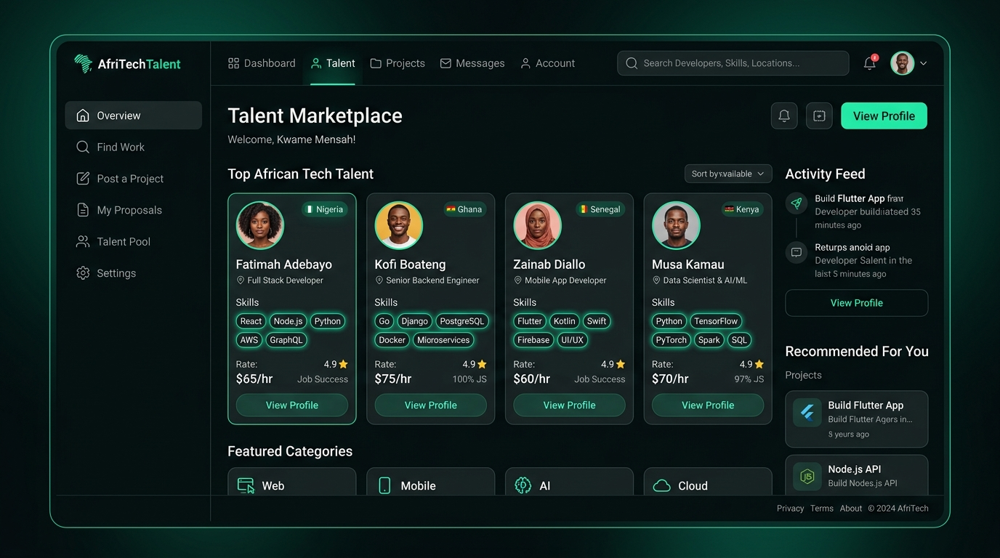
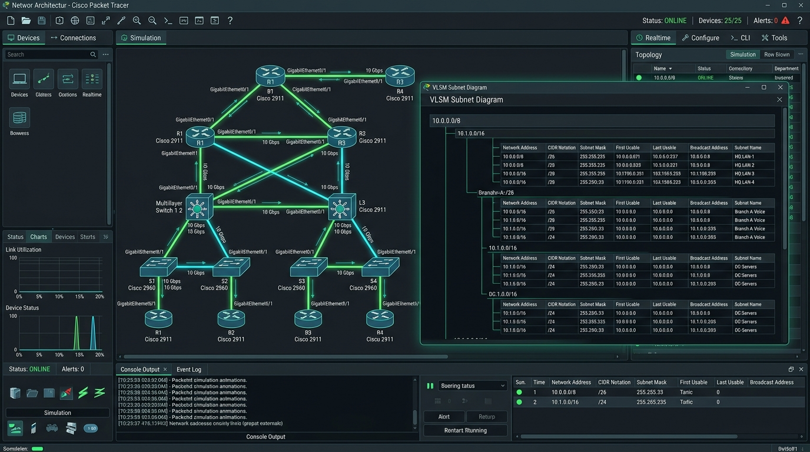

Étudiant en Licence Cybersécurité & Réseaux à Groupe ISI (Dakar). Passionné par la sécurisation des architectures réseaux, l'analyse des vulnérabilités et le développement web. Prêt à m'investir sur le terrain et à apporter de la valeur immédiate au sein d'une équipe technique.
Découvrez mon parcours, mes motivations et explorez mes commandes dans la console interactive.
👤 Pape Mamadou Diop
Étudiant en 1ère année de Licence Cybersécurité à Groupe ISI (Dakar).
Cursus combinant BTS et Licence dans un cycle d'excellence en sécurité et réseaux.
Spécialité : Réseaux Cisco, Investigation Kali Linux, Sécurité périmétrique, Câblage RJ45 & Web.
Objectif immédiat : Trouver un stage immersif pour mettre mes compétences en pratique.
Expérience concrète dans le sertissage et le test de câbles RJ45, la configuration de routeurs et switchs Cisco, ainsi que l'élaboration de plans d'adressage VLSM optimisés.
Sensibilisé aux méthodologies d'audit de sécurité, aux tests d'intrusion de base sous Kali Linux, à l'analyse de paquets réseau avec Wireshark et aux techniques OSINT.
Capable de concevoir et sécuriser des interfaces web (HTML/CSS/JS, Bootstrap, WordPress) et de produire des supports graphiques professionnels via Photoshop.
Immersion en entreprise et réalisations concrètes sur l'infrastructure informatique.
Stage d'immersion technique axé sur la maintenance des infrastructures matérielles, le déploiement réseau physique et le développement multimédia :
Savoir-faire acquis à travers mes études à Groupe ISI, mes certifications et mes projets pratiques.
Projets académiques, plateformes web et architectures de réseaux simulées.

Plateforme web connectant les freelances et talents technologiques africains aux entreprises à la recherche de compétences qualifiées. Interface réactive et ergonomique.

Conception d'une topologie réseau multi-sites sous Cisco Packet Tracer : découpage en sous-réseaux VLSM, configuration des VLANs, routage inter-VLAN et sécurisation des accès CLI.
Laboratoire pratique sous environnement Kali Linux : analyse de flux réseau sous Wireshark, cartographie des ports et services avec Nmap, et recherche d'empreinte numérique OSINT.
Formations certifiantes reconnues dans les domaines des réseaux, de la sécurité et de l'intelligence artificielle.
Cisco Networking Academy — Groupe ISI
Protocoles et modèles de communication réseau, principes Ethernet, adressage IPv4/IPv6 et configuration initiale des commutateurs et routeurs Cisco.
Juin 2026Microsoft & LinkedIn Learning
Fondamentaux de la sécurité des systèmes d'information, gestion des menaces, conformité réglementaire et stratégies de cyberdéfense d'entreprise.
Décembre 2025Programme FORCE-N — Université Numérique Cheikh Hamidou Kane
Concepts fondamentaux du Machine Learning, des réseaux de neurones artificiels et applications concrètes de l'IA pour l'automatisation et l'analyse de données.
Janvier 2026Parcours académique supérieur et compétences linguistiques.
Groupe ISI (Institut Supérieur d'Informatique) — Dakar
Depuis 2025 (En cours - 1ère année L1 CS)
Programme d'élite axé sur la sécurité des réseaux, les systèmes d'exploitation, l'administration serveur et l'algorithmique. Préparation conjointe du BTS et de la Licence.
Lycée de Tivaouane — Tivaouane, Sénégal
2023 – 2024
Formation scientifique rigoureuse en Mathématiques, Sciences Physiques et Sciences de la Vie et de la Terre, développant un esprit analytique et logique.
Disponible pour un stage, un projet ou une collaboration technique. Réponse rapide assurée.